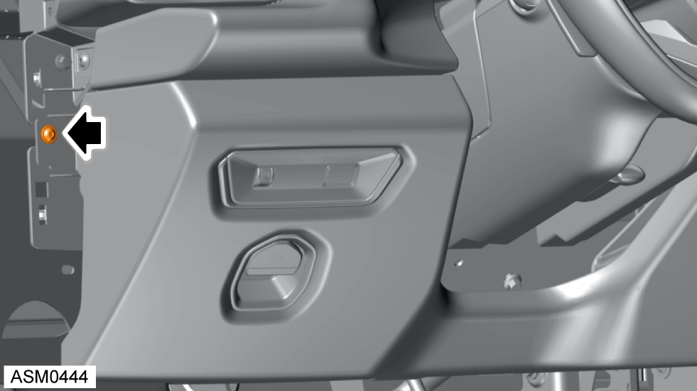
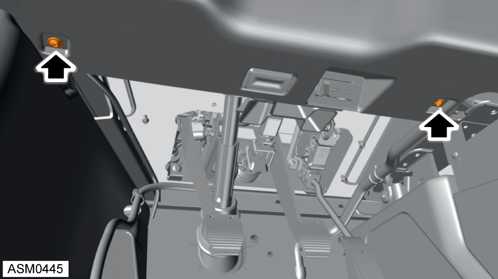
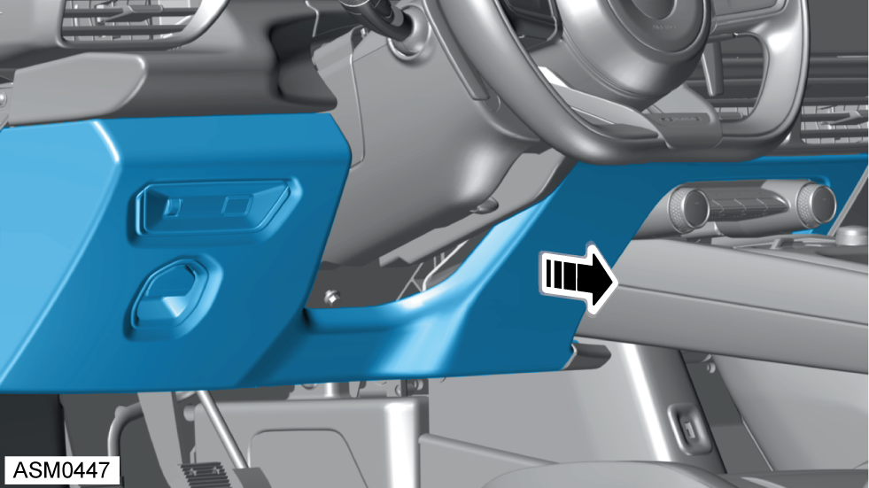
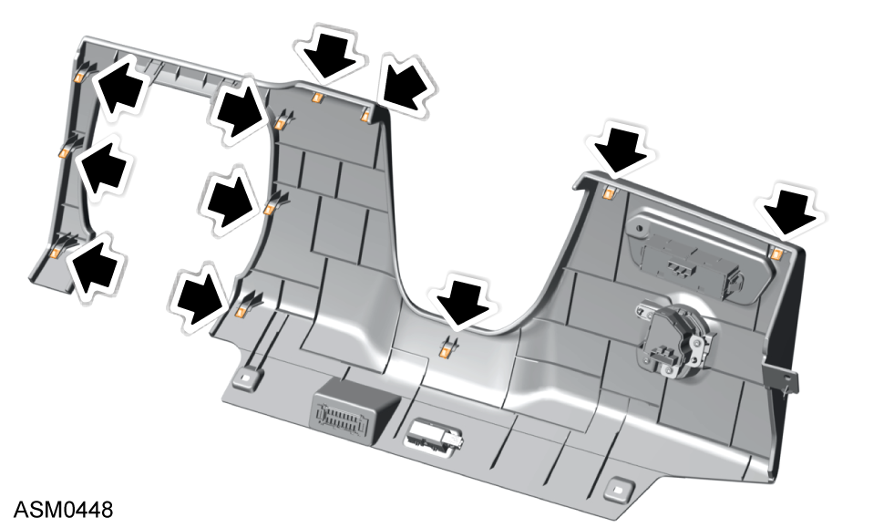
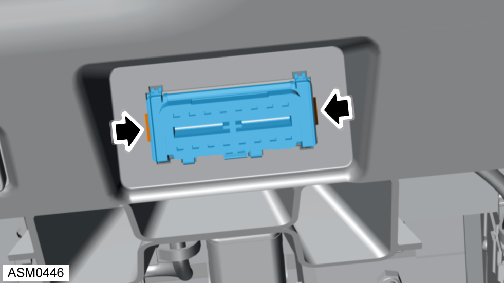
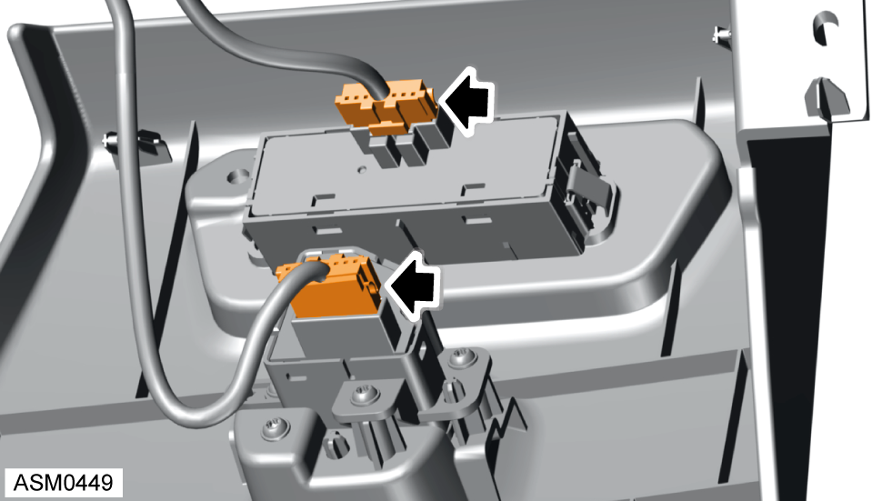
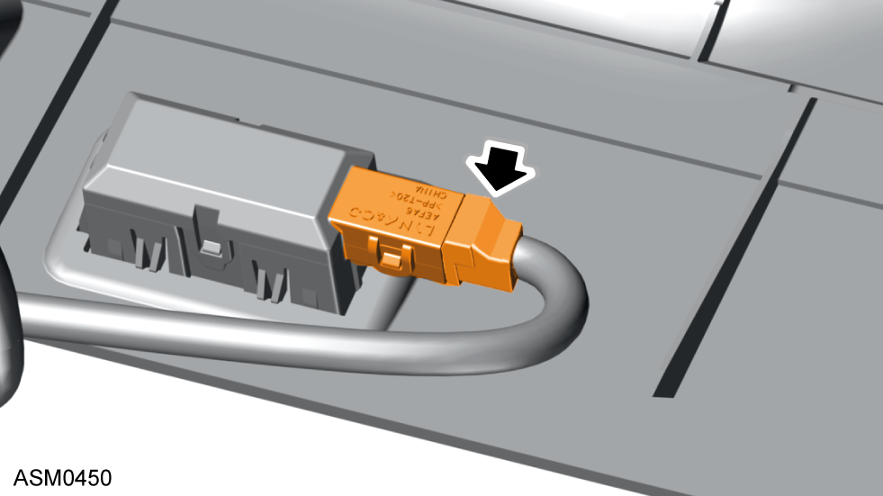
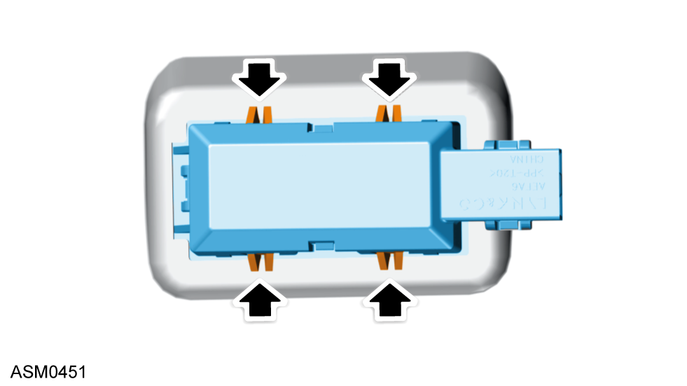
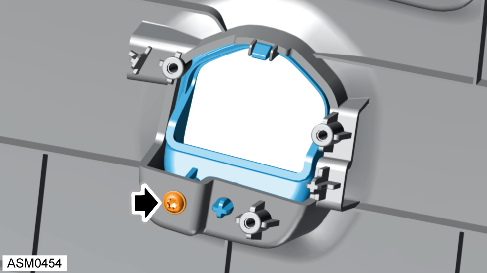
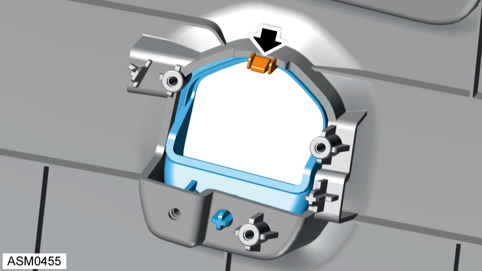

Fascia Panel - Lower
Print
Operation Code: 14.05.37-02
Removal
- Remove finisher fascia end - left. Refer to procedure.

- Remove 4x16 self tapping screw securing lower dash panel to fascia.

- Remove 4x16 self tapping screws (x2) securing lower fascia panel to fascia.
- Push diagnostic connector through to rear of lower fascia panel and move aside.

- Carefully disengage clips (x11) securing lower fascia panel to fascia.
 CAUTION: The clips are delicate, take care not to break plastic tabs.
CAUTION: The clips are delicate, take care not to break plastic tabs.

- Refer to illustration for clip type and location.
- Partially remove lower fascia panel to access harness connectors.

- Release clips (x2) securing diagnostic connector to lower fascia panel.

- Disconnect harness connectors (x2) from electronic handbrake switch and tailgate release switch.

- Disconnect harness connector from interior lamp.
- Remove lower fascia panel from vehicle.
Do not carry out further disassembly if component is removed for access only.

- Release clips (x4) securing interior lamp to lower fascia panel.
- Remove interior lamp from lower fascia panel.
- Remove tailgate and illumination control switch. Refer to procedure.
- Remove parking brake switch. Refer to procedure.

- Remove self tapping screw securing electronic handbrake switch surround to lower fascia panel.

- Disengage clip securing electronic handbrake switch surround to lower fascia panel.
- Remove electronic handbrake switch surround from lower fascia panel.
Installation
- Installation is the reverse of removal procedure.